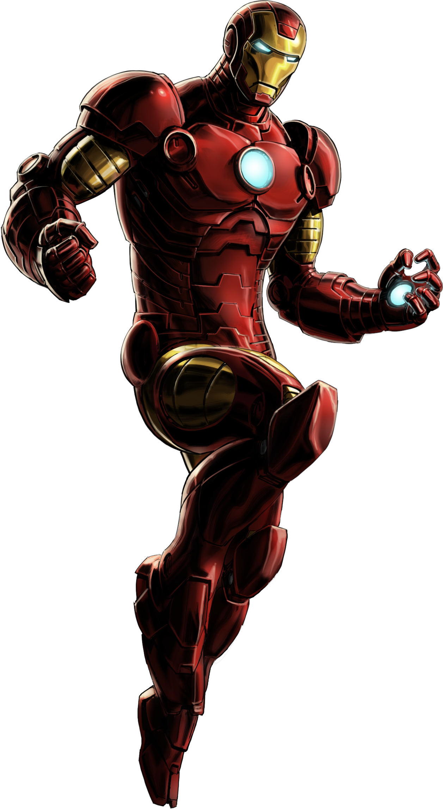
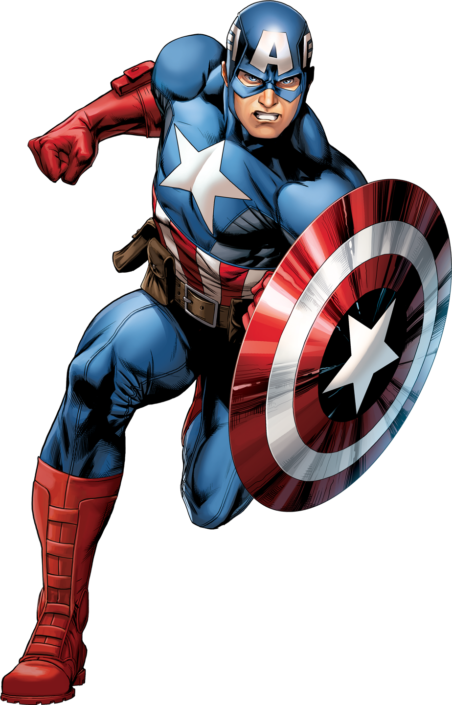

| Superheroes In Society | ||
|---|---|---|
Research Question Answered |
||
| Iron Man has gone through many traumatic experiences that have built his personality into a cold person who focuses on making the world safe and eliminating terrorists as a threat.
How did Iron Man's life before his suit and the incidents that occurred to him impact the way and purpose for his fight against crime today? Iron Man's life before his suit was very harsh, experiencing captivity inside of a terrorist cave, seeing his own weapons being used for mass destruction by terrorists, and having a cold father who only focused on his work and didn't seem to care about his son at all. All of this has built him into a cold person who is a super-genius and focuses on only his work. He fights to keep weapons out of the hands of terrorists and to keep his personal image positive. His cold and isolated father spent his time creating the arc reactor prototypes and drawings, allowing Tony to finish what he started and eventually save his own life, all thanks to his father. |
 | |
If you could have a superpower that would be "used for good - to protect and server others":
|
||
| If I could have any superpower I would choose the ability to freeze time. This is because if I could freeze time I would be able to stop time in its tracks, redirect bullets, punch people, and harm enemies without them being able to retaliate, and then when time resumes as normal I can be at a safe distance to where nobody would be aware that I am the one who did so. This means I can fight for the good of mankind as the unsung hero. Nobody would be aware of my existence as a hero so I could live out a normal life and nobody would be able to counter my attacks as they wouldn’t know I exist and they wouldn’t know that anybody is stopping them. I would also be able to do whatever I want with the powers. | ||
Superheroes in Society |
||
| It’s important for superheroes to be a part of modern society because they inspire young kids to do big things. They allow common, everyday children to want to be something amazing. Iron Man inspires little boys and girls around the world to be engineers and create cool gadgets and be the next billionaire. Captain America pushes everyone to believe in their company and he is an icon for the US Soldiers who lay their lives down everyday for the freedom of our company, pushing kids to want to help the cause of freedom. Superheroes inspire us all, and they give everybody hope. They allow us to see that humans could truly do anything if it meant saving society. They give everyone hope in society as a whole, that we can come together and fix problems if the times came to it. Superheroes also keep morale up. After a hard life, any traumatic events and stressful days, a good superhero movie of a man flying around saving the day or of a web-slinging comedic spiderman make pop culture references during combat, and make your day that much better. |  | |
Young Heroes |
||
| A young hero in today’s society is Jimmy Woodard. Jimmy is a kid in Manchester, Vermont, and attends Manchester Middle School. Jimmy helps keep everyone “plugged in” in Manchester as the modern era makes it essential to be able to control modern gadgets and computers. He is the guy to go to for anything from computers, internet, and lighting to sound and even piano playing. Jimmy inspires kids everywhere to help keep their towns “plugged in” by learning more about technology and helping even the elderly citizens to stay in the modern era. Jimmy continuosly inspires everyone to want to do what he does and see the smiles on people's faces when they have their problems fixed. Its apparent that many people need Jimmy, and he truly is a hero to his town. | ||
| Home - Superhero Profile - Superheroes in Society - Work Cited |
|---|